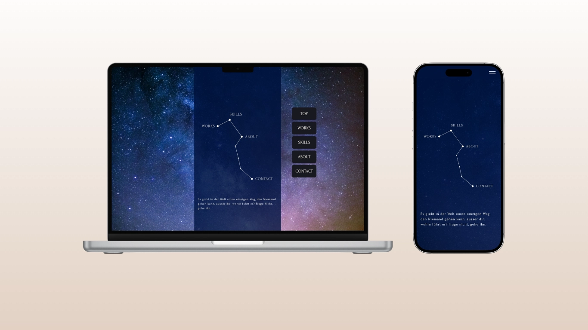
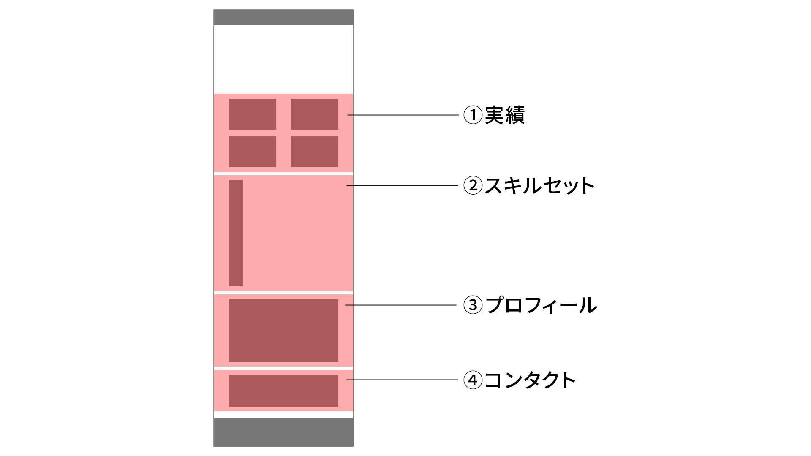
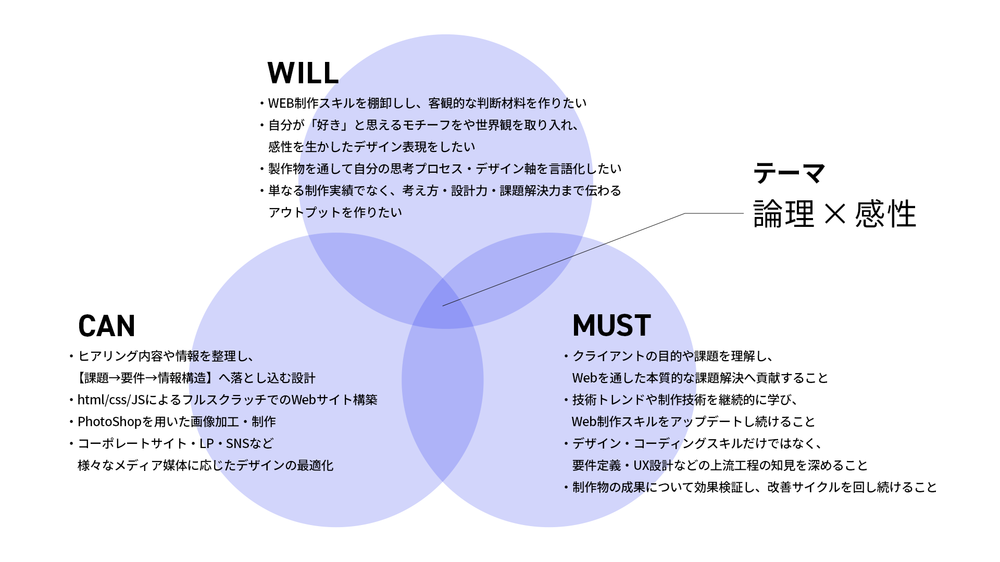
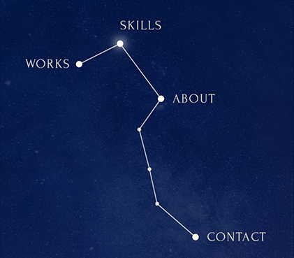
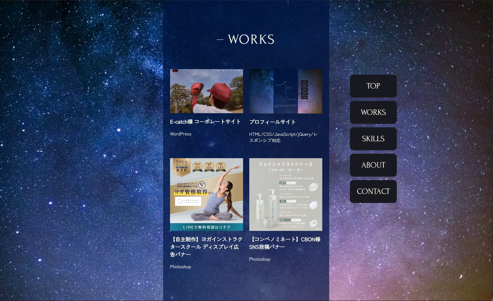
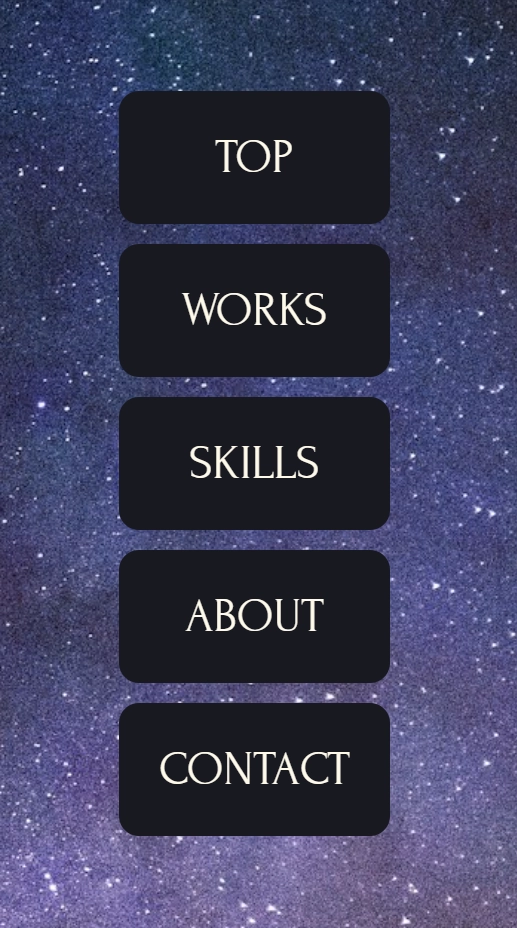
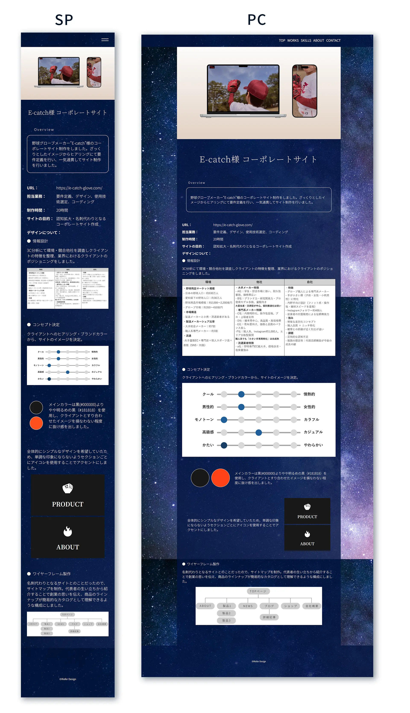

プロフィールサイト
Overview
自身のポートフォリオを兼ねたプロフィールサイトをしました。デザインから、フルスクラッチでhtml/css/JavaScript/JQueryをコーディングしました。
- URL：
- https://www.hogehoge.co.jp
- 担当業務：
- 要件定義、デザイン、使用技術選定、コーディング
- 制作時間：
- 30時間
- サイトの目的：
- WEB制作スキルを証明できるポートフォリオサイト
- デザインについて：
-
情報設計
見た人が「3分以内にスキル・人物像を把握できる」構成を意識しコンテンツを選定、優先順位をつけて情報を配置。

コンセプト決定
テーマは「論理」×「感性」。
情報構造は論理的に整理しつつ、配色・タイポグラフィ・モチーフから感性を演出。

FVの星座はPCだとマウスオンで仄かに瞬くよう設計。
閲覧しているデバイスのサイズが変わっても星座がずれたりしないよう、SVGファイルを用いて再現性を維持しました。ワイヤーフレーム製作
スマホ端末での閲覧が多いトレンドにキャッチアップするために、「モバイルファースト」のサイト設計に挑戦。TOPページはPC・スマホ共用デザインとすることで、レスポンシブ設計の工数を減らし、コーディング工程を効率化しました。


PCでは画面幅の余白にナビゲーションメニューを設置し、各コンテンツにアクセスしやすいUIにしました。
WORKの個別ページは情報量が多く、PCで見たときにスマホ幅だとやや見ずらいことが想定されたためPC・スマホでレイアウトを分けています。
